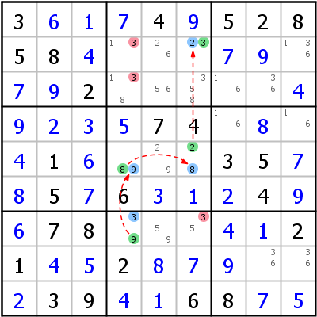

HoDoKu Solving Technique Index: Example for "XY-Chain"

Original sudoku:
3...4.52858.........2..........74....1....35..5.6...4..78.....21..2......39..68..
Use the following line if you want to load the sudoku in HoDoKu:
:0702:3:3+6+1+74+952858+4...+7+9.+7+92.....+4+9+2+3+574.+8.+41+6...35+7+85+76+3+1+24+9+678...+4+121+4+52+8+7+9..+239+4+168+7+5::324 334 376:
The following representation can be pasted in most Sudoku programs:
.---------.--------------.-------------. | 3 6 1 | 7 4 9 | 5 2 8 | | 5 8 4 | 13 26 23 | 7 9 136 | | 7 9 2 | 138 56 358 | 16 36 4 | :---------+--------------+-------------: | 9 2 3 | 5 7 4 | 16 8 16 | | 4 1 6 | 89 29 28 | 3 5 7 | | 8 5 7 | 6 3 1 | 2 4 9 | :---------+--------------+-------------: | 6 7 8 | 39 59 35 | 4 1 2 | | 1 4 5 | 2 8 7 | 9 36 36 | | 2 3 9 | 4 1 6 | 8 7 5 | '---------'--------------'-------------'
Representation of the step:
.---------.-----------------.-------------. | 3 6 1 | 7 4 9 | 5 2 8 | | 5 8 4 | 1-3 26 *23 | 7 9 136 | | 7 9 2 | 1-38 56 358 | 16 36 4 | :---------+-----------------+-------------: | 9 2 3 | 5 7 4 | 16 8 16 | | 4 1 6 | *89 29 *28 | 3 5 7 | | 8 5 7 | 6 3 1 | 2 4 9 | :---------+-----------------+-------------: | 6 7 8 | *39 59 -35 | 4 1 2 | | 1 4 5 | 2 8 7 | 9 36 36 | | 2 3 9 | 4 1 6 | 8 7 5 | '---------'-----------------'-------------' XY-Chain 3- r7c4 -9- r5c4 -8- r5c6 -2- r2c6 -3 => r23c4,r7c6<>3
Copyright © 2008-12 by Bernhard Hobiger
Last modified on May 5, 2025 by shorty#3746
(based of the 1to9only Github repo)
All material on this page is licensed under the GNU FDLv1.3.